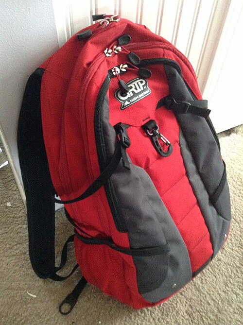

🟦 Term 1 — Question & Answer Mock Test 1
15 written questions. Write a full sentence answer on paper, then open the arrow to check. There can be more than one correct way to say something — the model answer shows a good one.
Q1. Answer in Spanish: ¿Cómo te llamas? (say your name is Lucía)
▶ Answer & explanation
The question means: "What is your name?" — write a sentence saying your name is Lucía. ✅ Model answer:
- 🇪🇸 Me llamo Lucía.
- 🇬🇧 My name is Lucía.
Q2. Answer in Spanish: ¿Cuántos años tienes? (say you are 12)
▶ Answer & explanation
The question means: "How old are you?" — say that you are 12. ✅ Model answer:
- 🇪🇸 Tengo doce años.
- 🇬🇧 I am 12 years old. (Remember: in Spanish you have years — tengo.)
Q3. Translate into Spanish: I am happy because it is my birthday. (boy)
▶ Answer & explanation
The question means: Put the whole English sentence into Spanish. ✅ Model answer:
- 🇪🇸 Estoy contento porque es mi cumpleaños.
- 🇬🇧 I am happy because it is my birthday. (Feelings use estoy; porque = because.)
Q4. Translate into English: Estoy un poco cansada pero contenta.
▶ Answer & explanation
The question means: Put the Spanish sentence into English. ✅ Model answer:
- 🇬🇧 I am a little tired but happy.
- 🇪🇸 Estoy un poco cansada pero contenta — un poco = a little, pero = but. (The ‑a endings tell us a girl is speaking.)
Q5. Answer in Spanish: ¿Cuándo es tu cumpleaños? (say it is the 15th of June)
▶ Answer & explanation
The question means: "When is your birthday?" — say the 15th of June. ✅ Model answer:
- 🇪🇸 Mi cumpleaños es el quince de junio.
- 🇬🇧 My birthday is the 15th of June. (Pattern: el + number + de + month.)
Q6. Write in Spanish the date: Monday, the 2nd of May.
▶ Answer & explanation
The question means: Write the full date in Spanish. ✅ Model answer:
- 🇪🇸 lunes, el dos de mayo (or Hoy es lunes, dos de mayo.)
- 🇬🇧 Monday, the 2nd of May. (Days and months have no capital letters in Spanish.)
Q7. Translate into Spanish: In my bag I have a pen, a pencil and a ruler.
▶ Answer & explanation
The question means: Put the sentence into Spanish. ✅ Model answer:
- 🇪🇸 En mi mochila tengo un bolígrafo, un lápiz y una regla.
- 🇬🇧 In my bag I have a pen, a pencil and a ruler. (un/un/una — regla is feminine.)
Q8. Translate into English: No tengo estuche, pero tengo un cuaderno.
▶ Answer & explanation
The question means: Put the Spanish into English. ✅ Model answer:
- 🇬🇧 I don't have a pencil case, but I have an exercise book.
- 🇪🇸 No tengo estuche, pero tengo un cuaderno — no… pero… = don't… but…
Q9. Look at the picture and write what it is, in Spanish, with un or una.

▶ Answer & explanation
The question means: Name the object using "a" + the word. ✅ Model answer:
- 🇪🇸 una mochila
- 🇬🇧 a backpack (mochila is feminine → una.)
Q10. Translate into Spanish: My backpack is new and cool.
▶ Answer & explanation
The question means: Put the sentence into Spanish (watch the adjective endings!). ✅ Model answer:
- 🇪🇸 Mi mochila es nueva y chula.
- 🇬🇧 My backpack is new and cool. (mochila is feminine → nuevo→nueva, chulo→chula.)
Q11. Translate into Spanish: I have a black and white cat.
▶ Answer & explanation
The question means: Put the sentence into Spanish. ✅ Model answer:
- 🇪🇸 Tengo un gato negro y blanco.
- 🇬🇧 I have a black and white cat. (Colours come after the noun.)
Q12. Answer in Spanish: ¿Tienes mascotas? (say you have two dogs)
▶ Answer & explanation
The question means: "Do you have pets?" — say you have two dogs. ✅ Model answer:
- 🇪🇸 Sí, tengo dos perros.
- 🇬🇧 Yes, I have two dogs. (perro → perros for plural.)
Q13. Translate into Spanish: I have long blond hair and blue eyes. (girl)
▶ Answer & explanation
The question means: Put the description into Spanish. ✅ Model answer:
- 🇪🇸 Tengo el pelo rubio y largo y los ojos azules.
- 🇬🇧 I have long blond hair and blue eyes. (ojos azules — plural because two eyes.)
Q14. Translate into English: Mi hermano es alto, gracioso y un poco perezoso.
▶ Answer & explanation
The question means: Put the Spanish into English. ✅ Model answer:
- 🇬🇧 My brother is tall, funny and a little lazy.
- 🇪🇸 alto = tall, gracioso = funny, perezoso = lazy.
Q15. Write 2–3 sentences in Spanish describing yourself: your name, your age and how you feel today.
▶ Answer & explanation
The question means: Write a short self‑introduction using Term 1 language. ✅ Model answer:
- 🇪🇸 Me llamo Sara. Tengo doce años. Hoy estoy muy contenta porque es viernes.
- 🇬🇧 My name is Sara. I am 12 years old. Today I am very happy because it's Friday.
- ✔️ Good answers use Me llamo… / Tengo … años / Estoy …. Change the words to fit you!
🏁 How did you do? Tick each one you got right: ____ / 15
➡️ Next: Term 1 — Q&A Mock 2